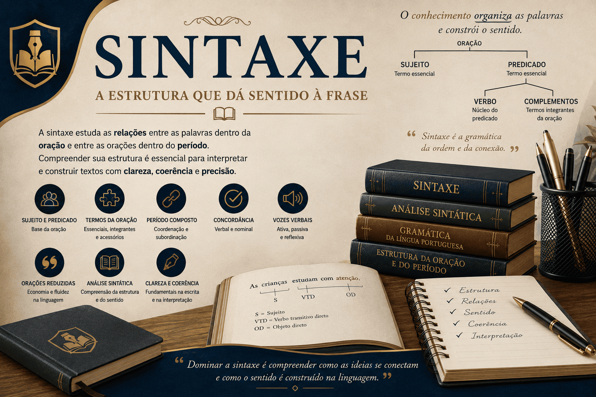

Sintaxe: estrutura da oração e relações entre as palavras
A Sintaxe é a área da gramática responsável por estudar
as relações entre as palavras dentro da oração e entre as orações
dentro do período.
Por meio da análise sintática, compreendemos como sujeito, predicado,
verbos, complementos e conectivos se organizam para construir sentido,
coerência e clareza nos textos.
Nesta seção do Mestre Kira, você encontrará conteúdos
didáticos sobre estrutura da frase, sujeito, predicado, concordância,
período composto, vozes verbais, termos da oração e relações sintáticas
importantes para redação, ENEM, vestibulares e concursos.

O que você encontrará nesta seção
Introdução à Sintaxe;
Estrutura da oração;
Sujeito e predicado;
Termos essenciais, integrantes e acessórios;
Período simples e composto;
Coordenação e subordinação;
Concordância verbal e nominal;
Vozes verbais;
Orações reduzidas;
Análise sintática aplicada.
Os conteúdos possuem abordagem clara e contextualizada,
sendo indicados para estudantes da educação básica,
vestibulandos, graduandos em Letras,
professores e leitores interessados na estrutura da Língua Portuguesa.
Os conteúdos desta seção são produzidos por
Leildo Gonçalves,
professor de Língua Portuguesa, pesquisador e criador do
Mestre Kira,
projeto educacional voltado ao ensino de gramática,
redação, literatura e tecnologia aplicada à educação.